/* john-vachon - proofs */
12 plates. Deterministic overlays rendered by the composition-analysis skill.
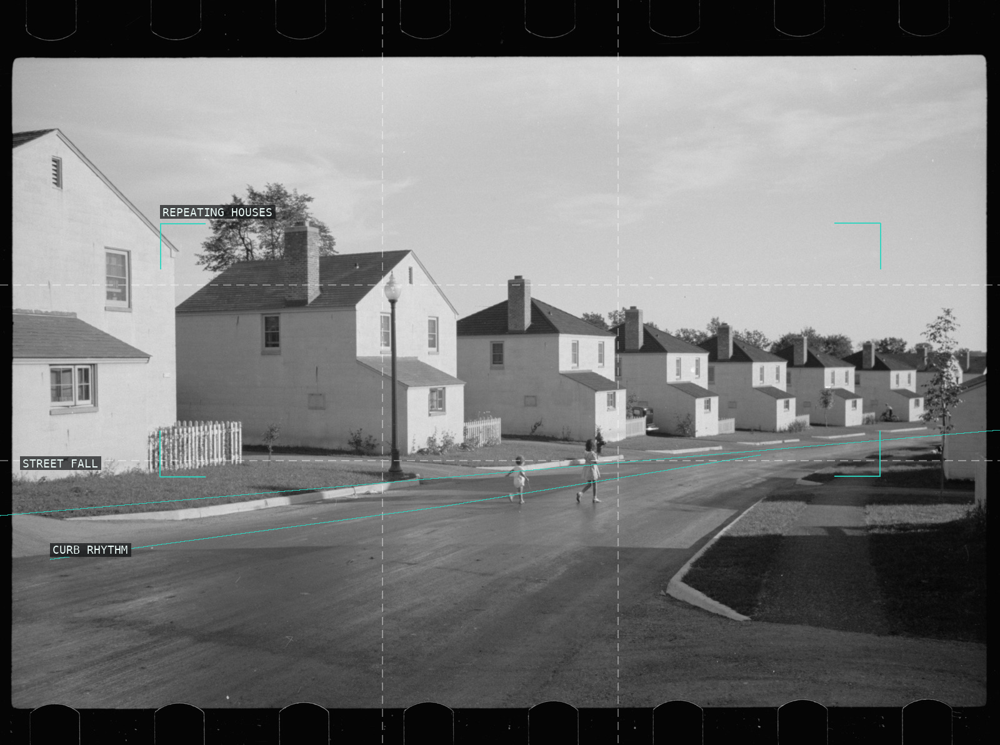
01-greendale-wisconsin
A shallow descending street organizes a repeated planned-house rhythm.
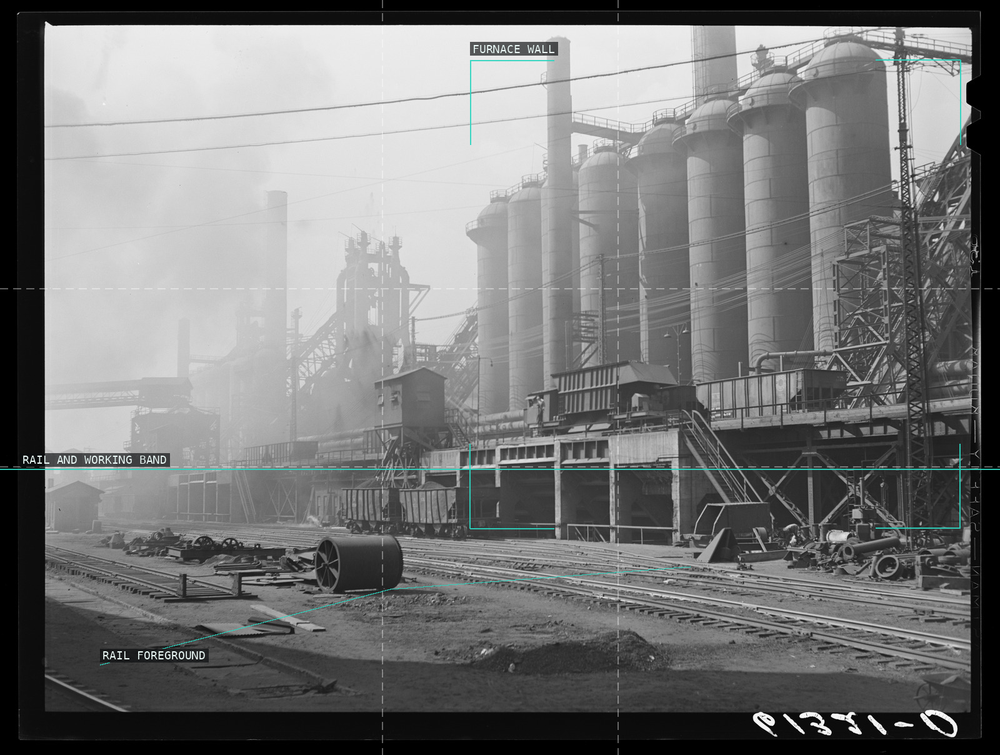
02-bethlehem-steel-mill
Rails make a low working band beneath the mill's vertical mass.
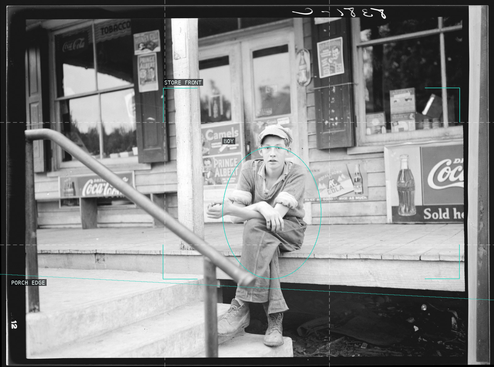
03-boy-general-store-roseland
The seated boy is held inside an advertising-filled porch rectangle.
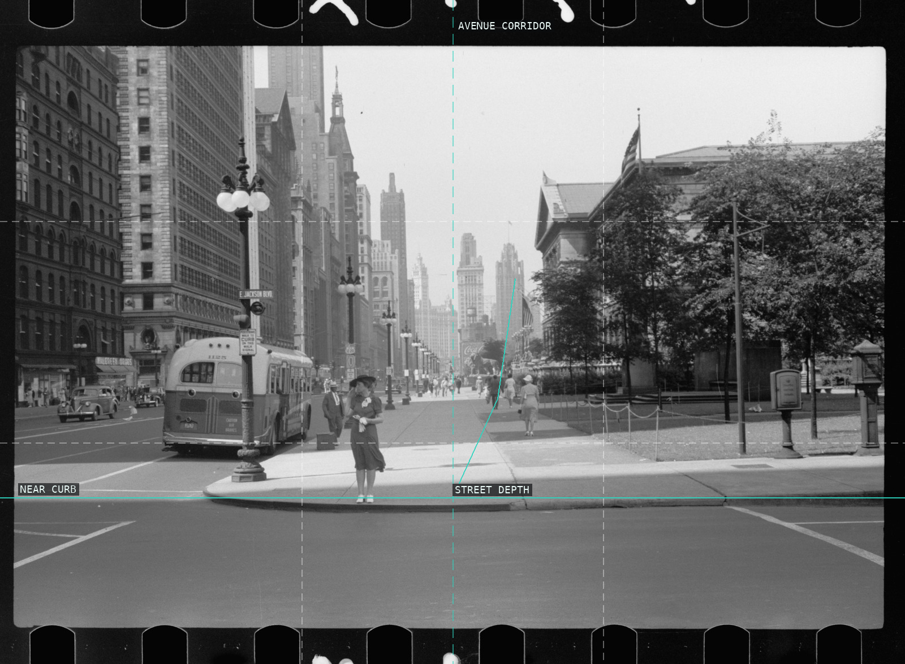
04-michigan-avenue-chicago
The avenue is a deep corridor balanced between facade and park.
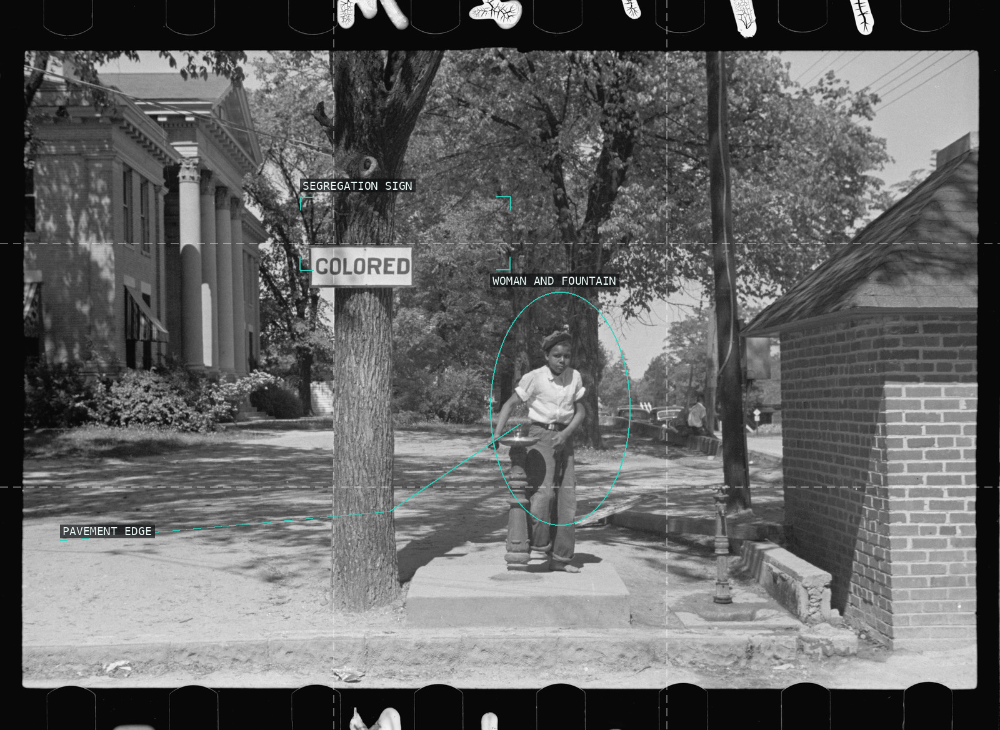
05-colored-drinking-fountain
A sign, a person, and a pavement diagonal make imposed separation unmistakably legible.
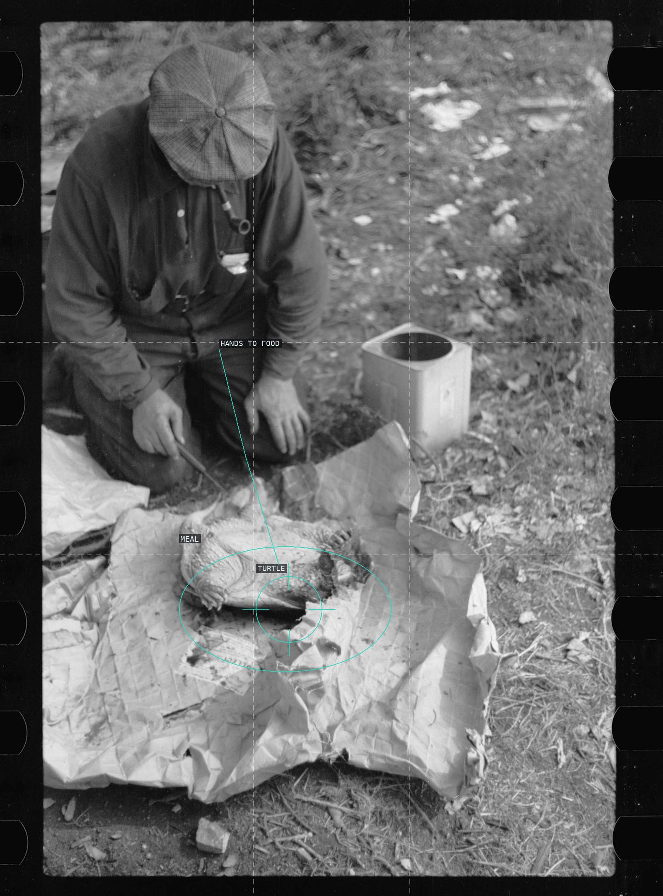
06-hobo-turtle-soup
Hands, turtle, and wrapping form a compact field of work and survival.
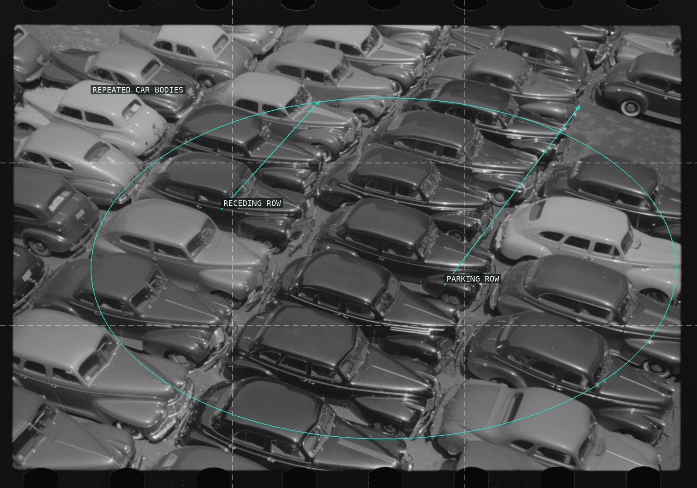
07-parking-lot-chicago
Repeated car bodies turn diagonal parking rows into an all-over rhythm.
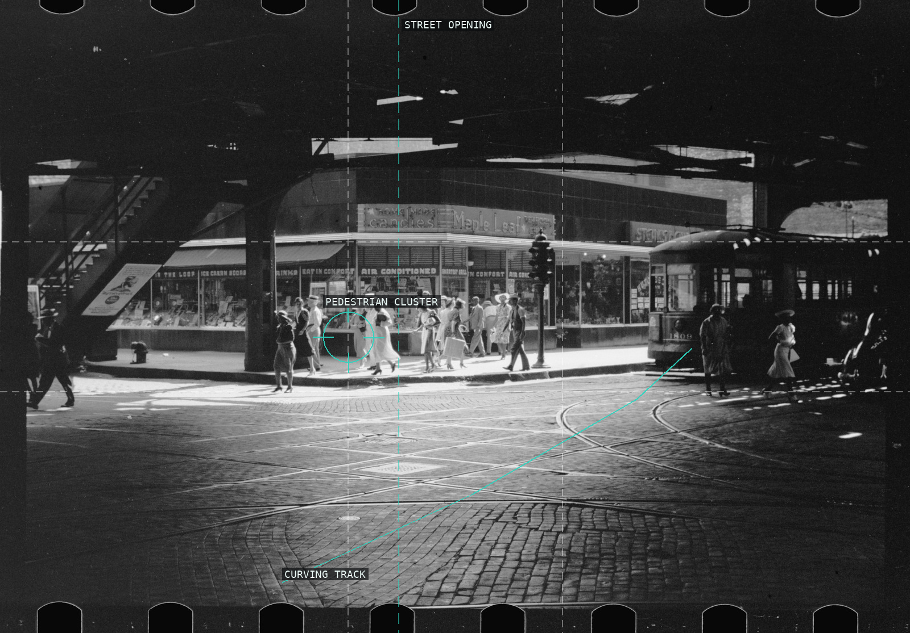
08-under-elevated-railway
Tracks, supports, and pedestrians turn the underpass into a layered stage.
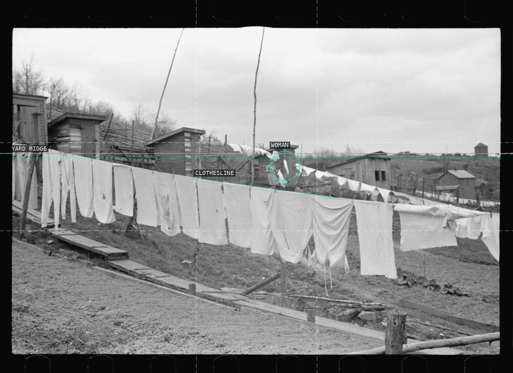
09-clothes-lines-privies-kempton
Laundry, sheds, and a small figure make the hillside a working network.
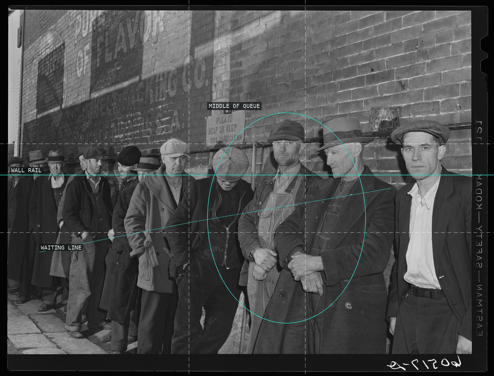
10-line-men-city-mission
The queue and wall rail compress individual bodies into one social line.
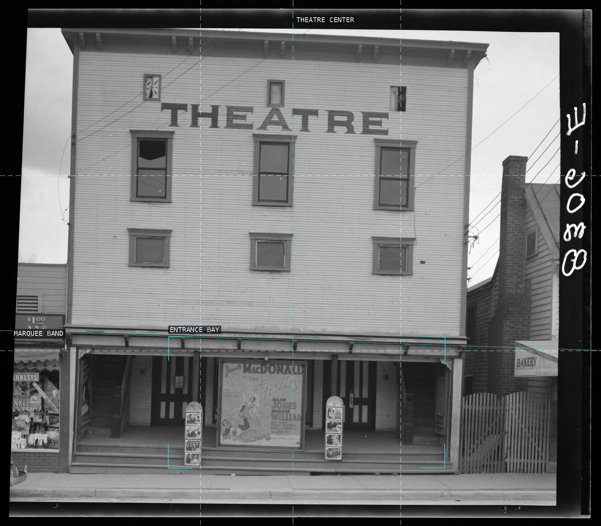
11-movie-theatre-romney
A centered facade turns marquee, poster, and entrance into a stack of rectangles.
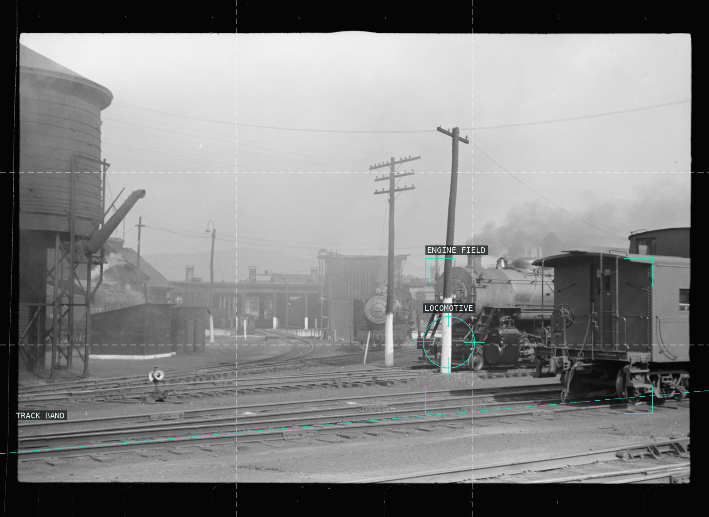
12-elkins-rail-yard
A low rail band and a right-hand engine measure an open industrial yard.